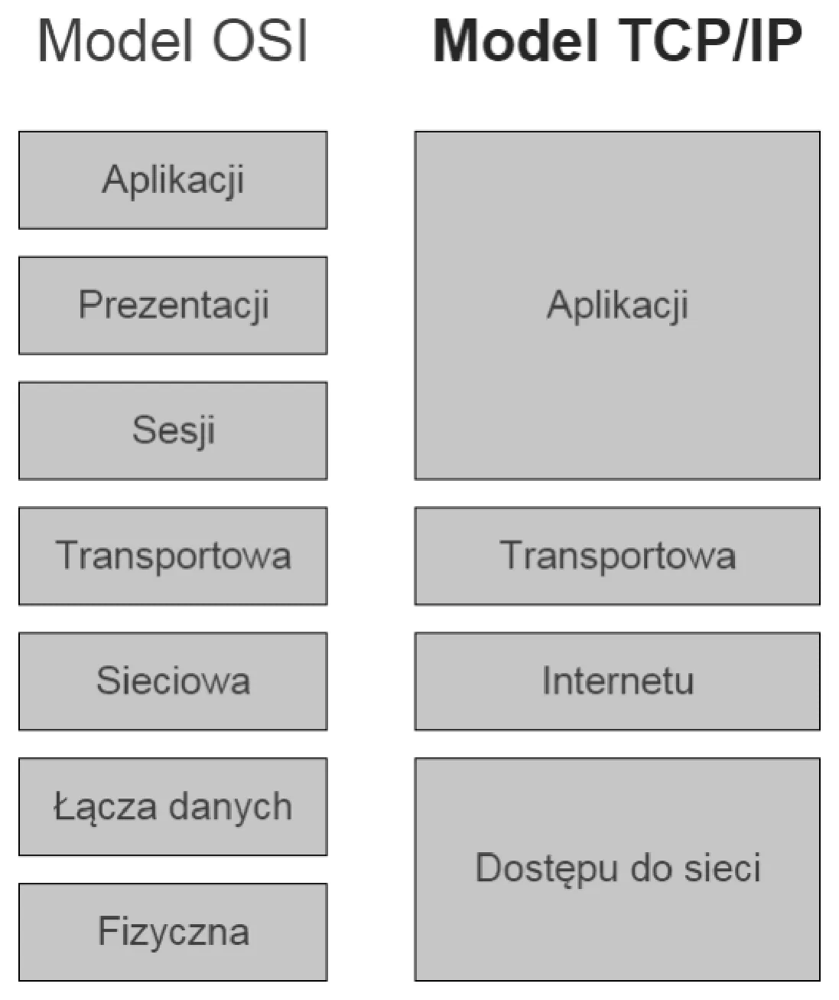
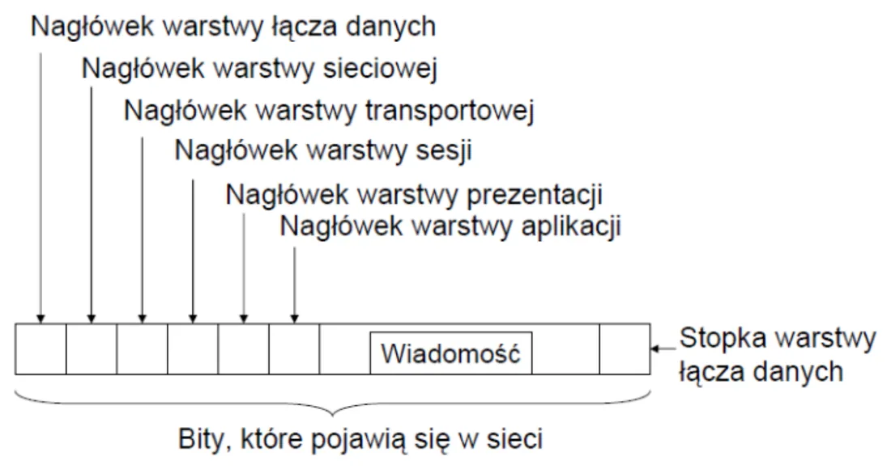
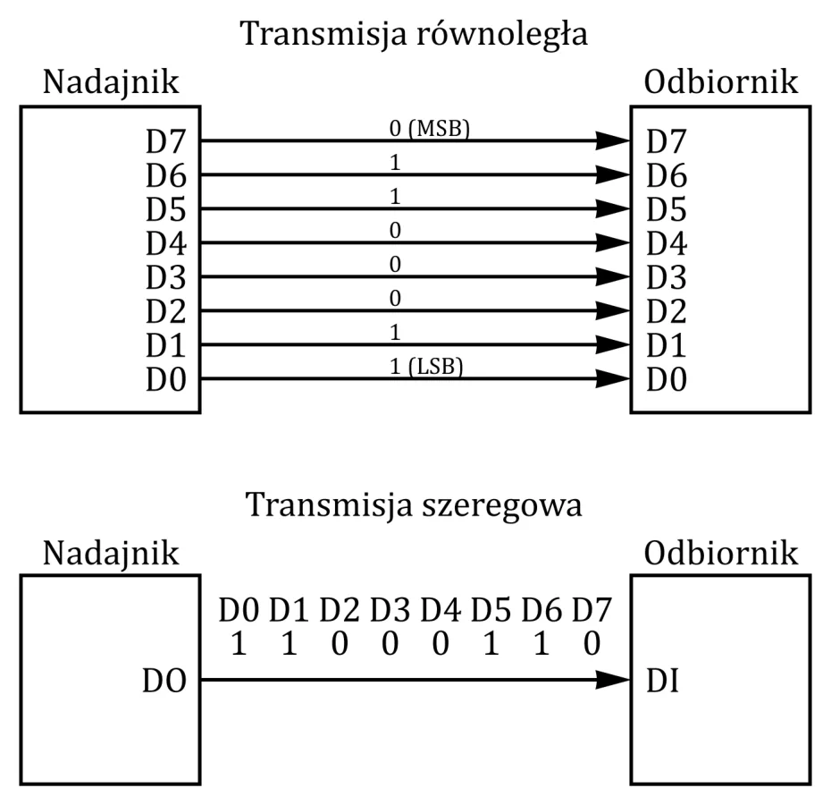
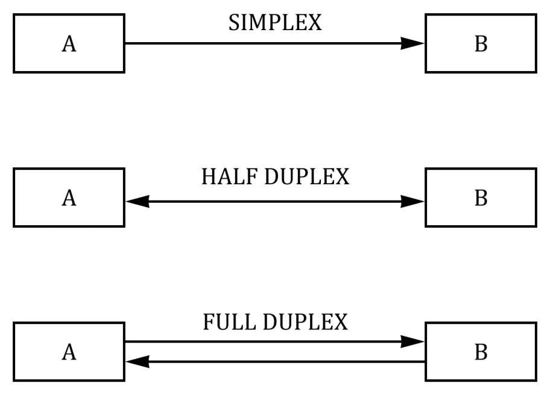
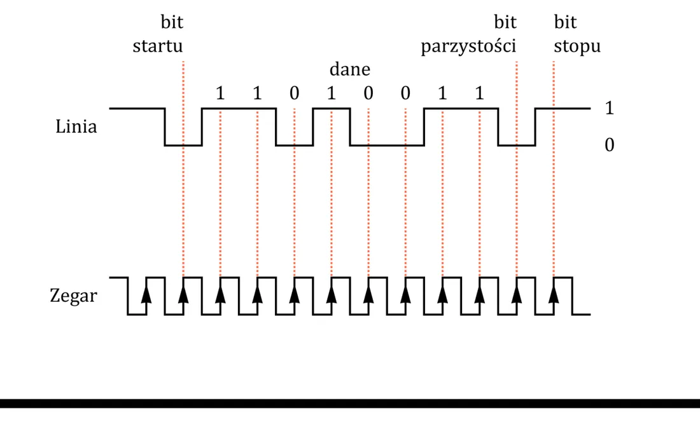
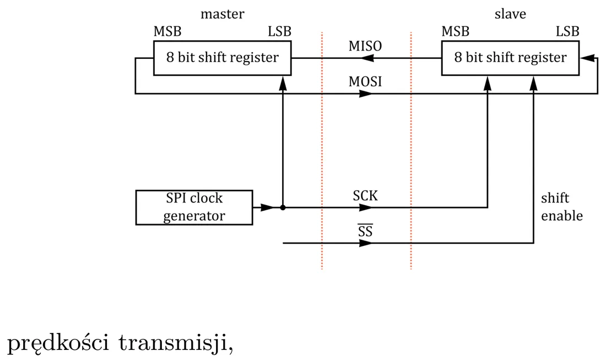
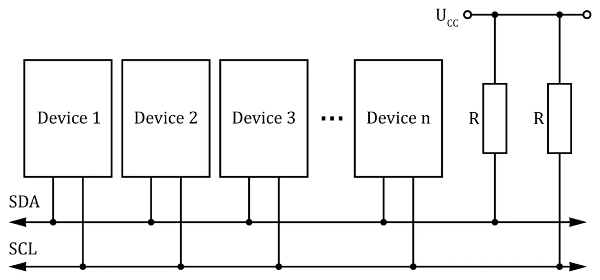
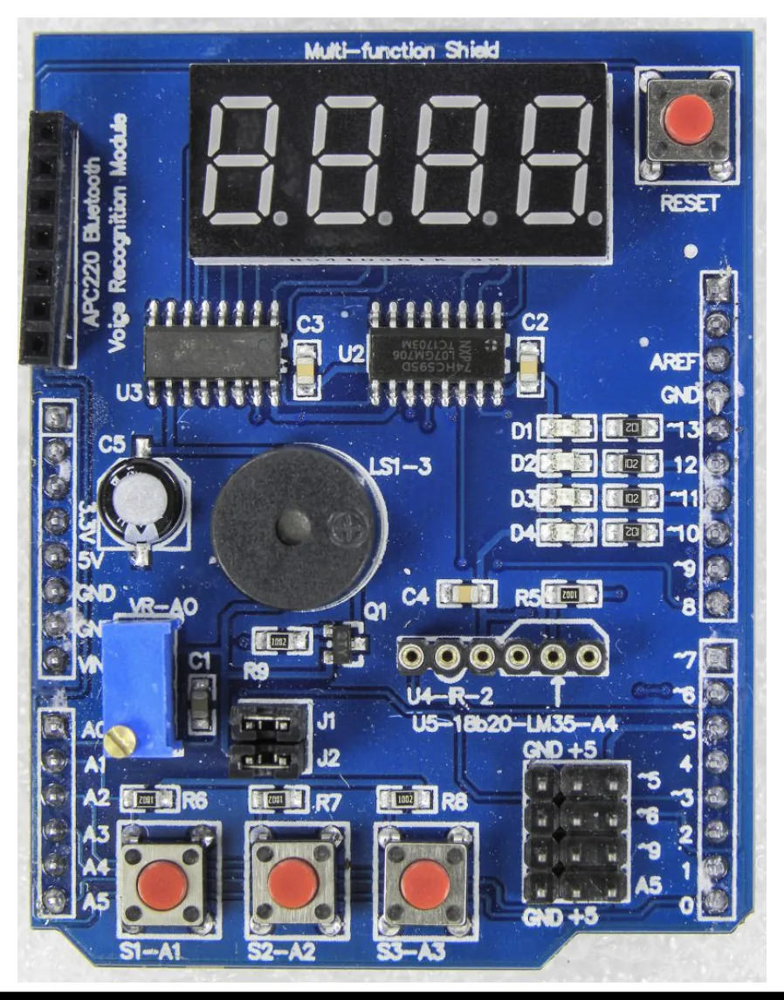
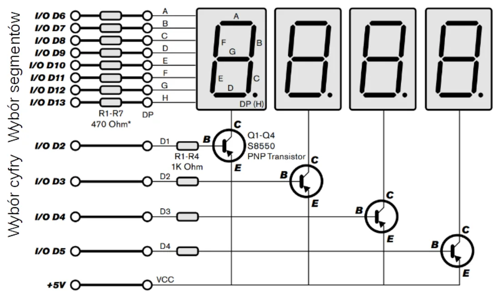

Layered models
Network communication is divided into layers. The set of mechanisms of one layer is a protocol; a protocol works only within its layer.


Encapsulation: a message of a higher layer is put inside a message of the lower layer — each layer adds its own header.


In plain words
A letter in an envelope, the envelope in a mail bag, the bag in a lorry. Each "layer" knows only its own packaging and does not look inside.
For us the two lowest layers matter: the physical layer (which voltages, which wires) and the data link layer (how the bits are arranged in a frame). That is exactly what standards such as I²C or RS-232 define.
Microcontroller ports
A port is an interface between a computer and another computer or device. A hardware port is physical pins; a software port is a logical connection (e.g. TCP/UDP ports).

A microcontroller's input/output pins:
- carry digital signals in the TTL/CMOS standard,
- are organised in bytes (ports B, C, D), but single bits can be set and read,
- are in the high-impedance state after reset,
- can have alternate functions (e.g. a port pin as a UART line or a converter input),
- have a software-enabled pull-up resistor.
Three ways to classify transmission
| Criterion | Kinds |
|---|---|
| How the bits travel | serial — bits one after another on one wire; parallel — several bits (usually a byte) at once, each on its own wire |
| Synchronisation | synchronous — a common clock signal marks the transfer moments; asynchronous — no clock, transmission may start at any time |
| Direction | simplex — one way only; half duplex — both ways but not at once; full duplex — both ways at once |




In plain words
Simplex is a radio (you only listen). Half duplex is a walkie-talkie ("over!" — only one speaks at a time). Full duplex is a telephone (both speak and listen at once).
An example of a parallel link: the LPT port (IEEE 1284, 25 pins, TTL standard, 1984) for printers and scanners.
Overview of serial interfaces
| Interface | In short |
|---|---|
| RS-232 | the classic serial link (originally for modems); needs voltage-level conversion |
| I²C | "between integrated circuits"; two wires, device addressing |
| SPI | similar uses to I²C but faster (several Mb/s) |
| CAN | a bus from the car industry (Bosch, 1980s) |
| USB | an advanced "plug and play" interface, up to 127 devices |
| D²B, FireWire (IEEE 1394) | others, less common |
UART / USART and RS-232
The USART in a microcontroller: synchronous or asynchronous transmission, full duplex, 5–9 data bits, 1 or 2 stop bits, a hardware parity bit and error detection. It is what Serial.print() in Arduino goes through.
The asynchronous frame
In asynchronous mode the transmitter and the receiver have separate clocks, so they must agree on the speed. A START bit and STOP bit(s) are added to every data word so the receiver knows where the word begins and ends.


From the site author (not in the lecture)
"9600 baud" in Serial.begin(9600) is that agreed speed: 9600 bits per second. If the serial monitor is set to a different speed than the program, you will see garbage.
RS-232
A standard connecting DTE (Data Terminal Equipment, e.g. a computer) with DCE (Data Communication Equipment, e.g. a modem). DB9 and DB25 connectors.
| Signal | Meaning |
|---|---|
| TxD | transmitted data |
| RxD | received data |
| SG | signal ground — the common reference potential |
| DSR, DTR, RTS, CTS, DCD, RI | control signals (ready, request to send…) |
Voltage levels — the data lines use negative logic:
| Logic state (data lines) | Voltage |
|---|---|
| 1 | from −15 V to −3 V |
| 0 | from +3 V to +15 V |
The range from −3 V to +3 V is undefined.
Watch out
RS-232 lines must not be connected directly to the TTL pins of a microcontroller (0…5 V) — ±15 V will damage it. The levels are matched by a special chip such as the MAX232.
SPI


Serial Peripheral Interface — synchronous, full duplex, very fast. One device is the master (it generates the clock), the others are slaves.
The lines (names from the lab materials):
| Line | Meaning |
|---|---|
| MOSI (Master Out, Slave In) | data from master to slave |
| MISO (Master In, Slave Out) | data from slave to master |
| SCLK | the clock — generated by the master |
| SS / CS (Slave/Chip Select) | selects the device the master talks to |
SPI has no addresses: every device has its own select line. In essence it is two shift registers connected in a ring — with every clock tick one bit goes out and one comes in.
USB 2.0
- The signal travels on two lines, D+ and D−; D− carries the negated D+ signal (differential transmission — it doubles the amplitude and rejects interference).
- Half-duplex, packet-based transmission (packets: token, data, handshake, start of frame…).
- The cable has four wires: +5 V (red), D− (white), D+ (green), ground (black).
- Up to 127 devices; 1.5 Mb/s (low speed) and 12 Mb/s (full speed).
I²C (Two-Wire)
Inter-Integrated Circuit — a bus for connecting chips with two wires.


Physical layer
- Two bidirectional lines: SDA (data) and SCL (clock).
- Both are permanently pulled up to the supply by resistors; all transmitters are open collector — a device can only "pull" the line to zero or release it.
- Positive logic: low = 0, high = 1. When nobody transmits, both lines are high.
- Data on SDA may change only while SCL is low.
- START: SDA goes from 1 to 0 while SCL is high. STOP: SDA goes from 0 to 1 while SCL is high.
- The line length is limited by its capacitance (max. 400 pF).
Data link layer
- A transmission is always started by the master. The bus is byte-oriented: bits go in groups of 8, most significant first.
- After every 8 bits the receiver answers with an acknowledge bit ACK (it pulls SDA to zero).
- The first byte is the 7-bit address of the slave + a direction bit: 0 = write (master → slave), 1 = read (slave → master).
- 7 bits give 128 addresses (112 in practice); address 0 is the general call — to everyone.
- Multi-master operation is possible: when two transmit at once, the one sending the lower address wins.
| Version | Speed |
|---|---|
| standard (1980s) | 100 kb/s, 7-bit address |
| 1.0 (1992), Fast Mode | 400 kb/s, 10-bit address possible |
| 2.0 (1998), High Speed | 3.4 Mb/s |
An I²C transmission (from the lab materials)
- The master sends START.
- The master sends the slave's address (7 bits) and the read/write bit.
- Every slave compares the address with its own; the one that matches answers ACK.
- The master sends or receives a data byte.
- After every byte the receiver answers ACK.
- The master ends the transmission with STOP.
The three lab interfaces compared
| UART | SPI | I²C | |
|---|---|---|---|
| Wires (without ground) | 2 (TX, RX) | 3 + one CS per device | 2 (SDA, SCL) |
| Clock | none (asynchronous) | yes | yes |
| How many devices | 2 | a few (separate CS) | up to 112 (addresses) |
| Direction | full duplex | full duplex | half duplex |
| On Arduino | Serial | shiftOut() / SPI library | Wire library |
The lab module (Multi-function Shield)
In the labs a board with ready-made components is plugged onto the Arduino:


| Arduino pin | What is connected |
|---|---|
| A0 | potentiometer (analog input) |
| A1, A2, A3 | buttons (with pull-up resistors) |
| 10, 11, 12, 13 | LEDs |
| A4, A5 | I²C bus (SDA, SCL) |
| 3 | buzzer |
| 4 | LATCH of the shift register |
| 7 | CLK of the shift register |
| 8 | DIO (data) of the shift register |
| 2 | interrupt input INT0 |
The LED display


The display is driven by two shift registers into which data is pushed serially (as in SPI):
- one register decides which segments are lit (the shape of the character),
- the other — which of the four positions is active.
LATCH_DIO 4
CLK_DIO 7
DATA_DIO 8
// wzory segmentów dla cyfr 0-9 / segment patterns for digits 0-9
const byte SEGMENT_MAP[] = {0xC0, 0xF9, 0xA4, 0xB0, 0x99, 0x92, 0x82, 0xF8, 0x80, 0x90};
// wybór pozycji 1-4 / selects position 1-4
const byte SEGMENT_SELECT[] = {0xF1, 0xF2, 0xF4, 0xF8};
void WriteNumberToSegment(byte Segment, byte Value) {
digitalWrite(LATCH_DIO, LOW);
shiftOut(DATA_DIO, CLK_DIO, MSBFIRST, SEGMENT_MAP[Value]);
shiftOut(DATA_DIO, CLK_DIO, MSBFIRST, SEGMENT_SELECT[Segment]);
digitalWrite(LATCH_DIO, HIGH);
}The order: LATCH low → send the byte with the segments → send the byte with the position → LATCH high (the data "latches" and appears on the display).
I²C in Arduino code
The Wire library does START, the address, ACK and STOP for us.
Wire.beginTransmission(deviceaddress);
Wire.write(eeaddress >> 8); // MSB
Wire.write(eeaddress & 0xFF); // LSB
Wire.write(data);
Wire.endTransmission();Wire.beginTransmission(deviceaddress); // dummy write
Wire.write(eeaddress >> 8); // MSB
Wire.write(eeaddress & 0xFF); // LSB
Wire.endTransmission();
Wire.requestFrom(deviceaddress, 1);
if (Wire.available()) byte rdata = Wire.read();The read pattern is always the same: first a "dummy write" — you send the address of the register you want to read — then requestFrom() and read().
byte displayTemperature() {
byte data = 0xFF;
Wire.beginTransmission(0x68);
Wire.write(0x11); // the integer portion
Wire.endTransmission();
Wire.requestFrom(0x68, 1);
if (Wire.available()) { data = Wire.read(); }
return data;
}Lab tasks (from the slide)
- SPI (shift register): show the text "HELP" on the display.
- I²C: read the integer temperature from the thermometer (address 0x68, register 0x11) and show it on the display.
- I²C: read the temperature with its fractional part (register 0x12) and display it with a decimal point.
Step by step: Lab 13.